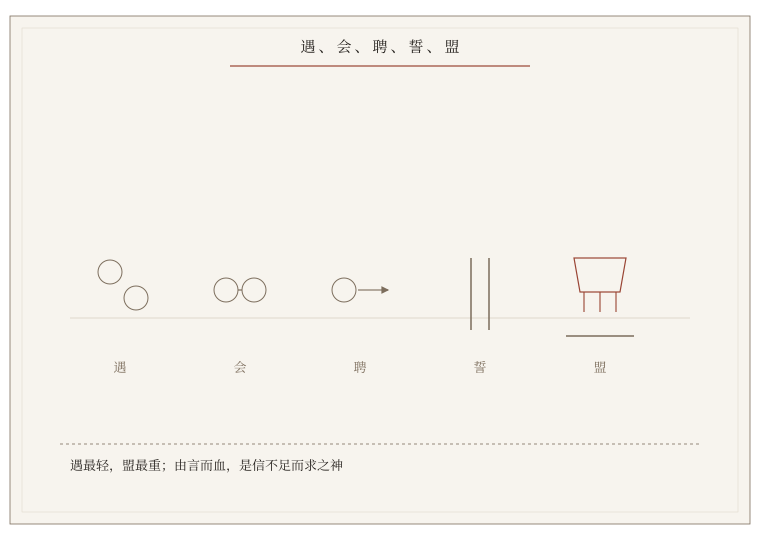

曲礼下 · 二·五十五 · 第 178 课
未及期、非其地而相见曰「遇」，及期会于郤地曰「会」，遣大夫相问曰「聘」，约信曰「誓」，临牲曰「盟」。注「坎用牲，临而读其盟书」。
说什么事：五种相见之名，及盟之仪。
落在哪一层：礼，兼及礼意。论礼之易与难。
为何编在此位：上节论朝觐之正，此节论正礼之外的相遇相约。正礼备而后及变礼。
【经】諸侯未及期相見曰「遇」，相見於郤地曰「會」。諸侯使大夫問於諸侯曰「聘」，約信曰「誓」，莅牲曰「盟」。
【注】及，至也。郤，間也。莅，臨也。坎用牲，臨而讀其盟書。《聘禮》今存，遇、會、誓、盟禮亡。誓之辭，《尚書》見有六篇。
【疏】今若未至前所期之日，及非所期之地，而忽相见，则并用遇礼相接，故曰遇也。所以尔者，遇礼易略，既期未至，故用简易礼也。「相见於郤地曰会」者，此谓及期之礼郤间也，既及期，又至所期之地，则其礼闲暇。「诸侯使大夫问於诸侯曰聘」者，聘，问也，谓遣大夫往相存问。「约信曰誓」者，约信，以其不能自和好，故用言辞共相约束以为信也。郑注《司寇》云「约，言语之约束也」。「莅牲曰盟」者，莅，临也，临牲者，盟所用也。盟者，杀牲歃血，誓於神也。天下太平之时，诸侯不得擅相与盟，唯天子巡守至方岳之下，会毕，然后乃与诸侯相盟。后至五霸之道，有事而会，不协而盟。盟之为法，先凿地为方坎，杀牲於坎上，割牲左耳，盛以珠盘，又取血，盛以玉敦，用血为盟，书成，乃歃血而读书。知坎血加书者，案僖二十五年《左传》云「坎血加书」，襄二十六年云「歃用牲加书」是也。《异义》云：「礼，约盟不今。《春秋公羊》说，古者不盟，结言而退。」故《穀梁传》云：「诰誓不及五帝，盟诅不及三王，交质子不及二伯。」
遇 未及期而相见。疏「遇礼易略」。
会 及期，会于郤地。郤，间也。
聘 问也。遣大夫相存问。
誓 约信之辞。郑注《司寇》「约，言语之约束也」。
盟 临牲而誓于神。割左耳盛珠盘，取血盛玉敦。
诸侯未到期、也非约地而相见，称「遇」；如期相见于两间之地，称「会」。诸侯派大夫问候诸侯，称「聘」；以言辞相约，称「誓」；临牲而誓，称「盟」。
五种名，五种关系的温度。遇最轻，会较重，聘以人代己，誓以言，盟以血。礼在此列出一条渐进的线：从偶然相逢，到割耳歃血。
第一层 遇之易 疏「遇礼易略，既期未至，故用简易礼也」。日程之外撞见，礼就从简。此见礼的一个原则：礼的繁简随「预期」而定，不随「尊卑」而定。
第二层 会之暇 疏「既及期，又至所期之地，则其礼闲暇」。如期如地，礼可以从容。同一个「见」，因是否在预期之内，宽严顿异。
第三层 誓与盟之分 誓以言，盟以血。疏「约信，以其不能自和好，故用言辞共相约束」。盟则「杀牲歃血，誓于神」。由言到血，是把信用从口搬到神前。人已不足恃，故求之于神。
第四层 盟非太平之礼 疏「天下太平之时，诸侯不得擅相与盟」，唯天子巡守会毕乃与诸侯盟。五霸以后「有事而会，不协而盟」。又引《公羊》「古者不盟，结言而退」、《穀梁》「诰誓不及五帝，盟诅不及三王」。礼家于此态度明白：盟是衰世之物。
与今日何干 合同越厚、见证越多，往往说明彼此的信任越薄。礼早就看穿了这一点。
| 左 | 右 |
|---|---|
| 未及期相见曰遇 | 遇礼易略 |
| 相见于郤地曰会 | 及期及地，其礼闲暇 |
| 使大夫问曰聘 | 遣大夫相存问 |
| 约信曰誓 | 以言辞相约束 |
| 莅牲曰盟 | 杀牲歃血，誓于神 |
| 古者不盟，结言而退 | 盟诅不及三王 |
画五级由轻到重的横排符号，同一基线：第一枚两小圆错开（示「遇」之偶然）；第二枚两圆对齐、间以短横（示「会」之如期）；第三枚一枚小圆加一道指向另一圆的细线（示「聘」之以人代）；第四枚两道并排短竖（示「誓」之言）；第五枚一具小鼎形，鼎下有一道横坎（示「盟」之临牲）。五符号等距、大小递减后可再增。不写文字。赭色只用在第五枚小鼎的口沿。
